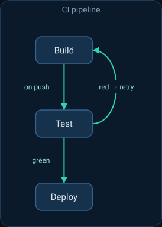
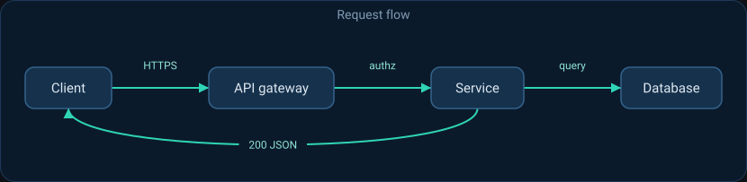
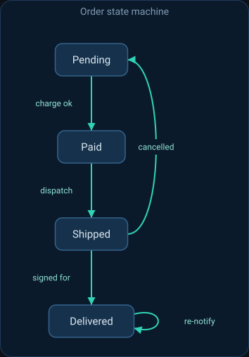

Tool
svgflow
Draws a small flow, pipeline, or state diagram as a committed SVG from a tiny JSON spec.
Render a box-and-arrow flow, pipeline, or state diagram as a committed SVG from a small JSON spec — no browser, no mermaid runtime, no headless renderer. Reach for this whenever a task calls for a diagram to explain a design, pipeline, request path, or state machine in a README or docs page rather than describing it in prose or leaving a mermaid block for something else to render. The output self-sizes and is styled for dark pages. Never a slash command; the crew reach for it implicitly when the intent calls for one.
What it does
svgflow turns a small JSON spec — a list of nodes and the edges between them — into a clean box-and-arrow diagram, emitted as a self-contained SVG. There is no browser, no mermaid runtime, and no headless renderer: the SVG is assembled as text and is byte-for-byte deterministic, so the same spec always produces the same file and it is safe to commit next to the docs it illustrates.
It does one thing well. Nodes lay out in a single column ("direction": "down") or row ("direction": "right") in declaration order, each box sized to its label; adjacent nodes join with a straight spine arrow while skips, back-edges, and self-loops bow out to the side so they stay legible. It is a tool, not a command: the crew reach for it on their own when the natural artifact of a task is a diagram of how the pieces connect — a CI pipeline, a request path, a state machine — instead of a paragraph of prose or a mermaid block something else has to render.
Examples
A few things svgflow can produce, each from a small spec of its own.



How the crew reach for it
Tools are opt-in. Add it at install time with shipmates install --harness <name> --with-tools svgflow, or omit the flag and pick it from the interactive list. Once installed it sits alongside the crew as a capability they invoke implicitly; there is no slash command to type.
The renderer depends only on the Python standard library, so wherever the tool lands the agent can run python3 svgflow.py --spec spec.json --out flow.svg with nothing to install. The svgflow.py script and the spec format it needs are bundled together in tool.md.
Reference
- Name
svgflow- Description
- Render a box-and-arrow flow, pipeline, or state diagram as a committed SVG from a small JSON spec — no browser, no mermaid runtime, no headless renderer. Reach for this whenever a task calls for a diagram to explain a design, pipeline, request path, or state machine in a README or docs page rather than describing it in prose or leaving a mermaid block for something else to render. The output self-sizes and is styled for dark pages. Never a slash command; the crew reach for it implicitly when the intent calls for one.
- Bundled files
svgflow.py- Install
shipmates install --harness <name> --with-tools svgflow
Where this lives
This page is generated from toolbox/svgflow/tool.md. Opt in at install with --with-tools svgflow and the installer copies the tool — instructions and bundled files — into the harness's skills tree.